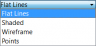

|
| Emplacement du menu |
|---|
| Part → Congé |
| Ateliers |
| Atelier Pièce, Complet |
| Raccourci par défaut |
| Aucun |
| Voir aussi |
| Chanfrein Pièce |
Description
Cet outil applique des  congés (arrondis) sur les arêtes sélectionnées d'un objet. Une boite de dialogue vous permet de choisir sur quels objets, et, sur quelles arêtes travailler.
congés (arrondis) sur les arêtes sélectionnées d'un objet. Une boite de dialogue vous permet de choisir sur quels objets, et, sur quelles arêtes travailler.
Utilisation
Démarrez l'outil  congés qui se trouve dans " Boîte déroulante des ateliers → Part
congés qui se trouve dans " Boîte déroulante des ateliers → Part  →
→  congés depuis la barre d'outils, ou le menu. Vous pouvez sélectionner l'objet au préalable.
congés depuis la barre d'outils, ou le menu. Vous pouvez sélectionner l'objet au préalable.
Si la forme n'a pas été sélectionnée au préalable, sélectionnez-la dans la liste déroulante du panneau des Tâches.
Sélectionnez le type de congé, soit rayon constant (par défaut), ou rayon variable.
Sélectionnez les arêtes, soit dans la vue 3D, ou en les cochant, dans la liste du panneau des Tâches.
Réglez la valeur du rayon, puis cliquez OK pour valider.
Options
Vue combinée → Tâche

 Congé des arêtes
Congé des arêtes
Forme
- TÂCHES Forme sélectionnée : Si une forme a été sélectionnée, elle est automatiquement affichée. Si aucune forme n'est sélectionnée, vous pouvez sélectionner votre forme dans cette boîte déroulante. Cette boîte déroulante
 , liste toutes les formes qui peuvent être utilisées par l'outil congé, vous pouvez sélectionner votre forme dans cette liste, (ou avant de sélectionner l'outil congés, directement dans la fenêtre 3D, et, elle sera automatiquement affichée). (Défaut, Aucune sélection).
, liste toutes les formes qui peuvent être utilisées par l'outil congé, vous pouvez sélectionner votre forme dans cette liste, (ou avant de sélectionner l'outil congés, directement dans la fenêtre 3D, et, elle sera automatiquement affichée). (Défaut, Aucune sélection).

Paramètres de congé
- Tous : Sélectionne toutes les arêtes de la forme sélectionnée.
- Aucun : Décoche toutes les arêtes de la forme sélectionnée.
Chaque arête peut être cochée séparément. - TÂCHES Type de congé : Cette option, vous permet de choisir le type de congé a effectuer, , Rayon constant, ou Rayon variable. (Défaut, Rayon constant).
Sur cette exemple l'option est réglée sur Rayon constant, et, un seul réglage de rayon est possible.
- TÂCHES Rayon : Réglage du paramètre rayon, ici un seul rayon, pour un Rayon constant.

Sur cette exemple l'option est réglée sur Rayon variable, et, deux réglages de rayons sont demandés.
- TÂCHES Rayon : Réglage des paramètres rayon, ici deux rayons sont a entrer, Rayon initial, et, Rayon final, pour avoir un Rayon variable.
Propriétés
Vue combinée → Propriétés Vue
Base
- VUEBounding Box : Permet de visualiser l'occupation, et, les dimensions hors tout, de l'objet dans l'espace. Valeur FALSE, ou TRUE (Défaut, FALSE).
- VUEControl Point : Valeur FALSE, ou TRUE (Défaut, FALSE).
- VUEDeviation : (Défaut, 0.00).
- VUEDisplay Mode : Mode d'affichage de la forme, Flat lines, Shaded, Wireframe, Points . (Défaut, Flat lines).
- VUEDraw Style : Type de ligne, Solid, Dashed, Dotted, Dashdot
 . (Défaut, Solid).
. (Défaut, Solid).
- VUELighting : Éclairage One side, Two side
 . (Défaut, Two side).
. (Défaut, Two side).
- VUELine Color : Donne la couleur de la ligne (bords). (Défaut, 255, 255, 255).
- VUELine Width : Donne l'épaisseur de la ligne (bords). (Défaut, 2).
- VUEPoint Color : Donne la couleur des points (extrémités de la forme). (Defaut, 255, 255, 255).
- VUEPoint Size : Donne la dimension des points. (Défaut, 2.00).
- VUESelectable : Autorise la sélection de la forme. Valeur FALSE, ou TRUE (Défaut, TRUE).
- VUEShape Color : Donne la couleur de la forme. (Défaut, 204, 204, 204).
- VUETransparency : Règle le degrés de transparence de la forme, de 0 à 100. (Defaut, 0).
- VUEVisibility : Détermine la visibilité de la forme (comme la barre ESPACE). Valeur FALSE, ou TRUE. (Défaut, TRUE).
Vue combinée → Propriétés Données
Base
- DONNÉESLabel : Label donné à la forme, modifiable à volonté.
- DONNÉESPlacement : [(0,00 0,00 1,00);0,00;(0,00 0,00 0,00)], donne l'ensemble des données Angle, Axis, et, Position ci dessous.
Si vous sélectionnez, le titre Placement , un bouton avec trois petits points s'affiche, en cliquant sur ce bouton ... , vous avez accès à la fenêtre d'options Tâche Placement.
, un bouton avec trois petits points s'affiche, en cliquant sur ce bouton ... , vous avez accès à la fenêtre d'options Tâche Placement. - DONNÉESAngle : Angle de rotation par rapport aux coordonnées X, Y, Z. (Défaut, 0,00°).
- DONNÉESAxis : Cette option spécifie l'axe des axes autour desquels la pièce de révolution créée doit être pivotée PAS RÉVOLUTIONNÉE (la valeur exacte du pivotement est défini par l'option Angle ci-dessus).
Cette option demande trois arguments, qui sont passés sous forme de nombres dans les cases de la boîte à outils, définissants les coordonnées x, y ou z, .
La modification d'une valeur de plus d'un axes provoque la rotation avec l'angle de chaque axe.
Par exemple : nous déterminons un angle de 15°, nous spécifions une valeur de 1,0 pour x et 2,0 pour y, cette configuration, aura pour effet, une rotation finale de la pièce qui sera de, " 15° dans l'axe x " et " 30° dans l'axe y ".
- DONNÉES X : Angle à donner dans la direction X . (Défaut, 0,00).
- DONNÉES Y : Angle à donner dans la direction Y . (Défaut, 0,00).
- DONNÉES Z : Angle à donner dans la direction Z . (Défaut, 1,00).
- DONNÉESPosition : [0,00 0,00 0,00] récapitulation des coordonnées de position, par rapport coordonnée d'origine 0,00 0,00 0,00.
- DONNÉES X : Déplacement à donner dans la direction X .(Défaut, 0,00).
- DONNÉES Y : Déplacement à donner dans la direction Y .(Défaut, 0,00).
- DONNÉES Z : Déplacement à donner dans la direction Z .(Défaut, 0,00).
Exemple

une fois sélectionnée, la fenêtre de propriétés de la forme s'affiche.


et réglons notre paramètre TÂCHES Type de congé sur Rayon constant. (Valeur, par défaut, Rayon constant).

Validons avec OK , pour voir notre congé s'effectuer.


Sélectionnons notre deuxième arête à modifier.

De nouveau notre TÂCHES Forme sélectionnée Box s'affiche, et, notre arête est cochée.


Réglons notre paramètre TÂCHES Type de congé sur Rayon variable.


Entrons 5 mm, pour le rayon de départ,

et, 20 mm pour le rayon d'arrivée.


{kind=link}
{kind=link}
{kind=link}
{kind=link}
{kind=link}
{kind=link}
{kind=link}
{kind=link}
{kind=link}
{kind=link}
Une nouvelle icône par opération s'affiche dans la Vue combinée, renseignant l(es)'opération(s).
Si vous cliquez sur la flèche, vous pouvez voir les formes d'origine, qui ont servi dans l'opération de Congé.
Les formes originales peuvent être effacées, pour ne conserver que le produit final.
{kind=link}
{kind=link}
{kind=link}
Comparaison congé PartDesign et congé Part
Le  Congé PartDesign ne doit pas être confondu avec son équivalent de l'atelier Part
Congé PartDesign ne doit pas être confondu avec son équivalent de l'atelier Part  Congé Part.
Congé Part.
Bien qu'ils partagent la même icône, ces outils sont différents, et s'utilisent différemment.
Voici quelques différences :
- Le
 Congé PartDesign est paramétrique. Après l'application d'un Congé, sa dimension peut être modifié ; ce n'est pas le cas du Congé Part.
Congé PartDesign est paramétrique. Après l'application d'un Congé, sa dimension peut être modifié ; ce n'est pas le cas du Congé Part. - Les arêtes doivent être sélectionnées avant de démarrer le Congé PartDesign. Le Congé Part, quant à lui, peut être lancé, puis, suivi de la sélection du solide, et, enfin des arêtes.
- Le Congé PartDesign ajoute une entrée distincte dans l'arborescence Projet. Le Congé Part devient le parent de l'objet auquel il a été appliqué.
- Le Congé Partdesign affiche un aperçu en temps réel de l'application du congé avant la validation de la fonction.
- Le Congé Part supporte les dimensions variables (avec une dimension de départ, et, une dimension d'arrivée). Le Congé PartDesign ne le permet pas.
Les outils de modifications


Notes on application of Part Fillet
The fillet tool sometimes fails when trying to fillet complex objects. A common cause of this may be that the shape being filleted is not geometrically correct. This may be the result of lines/planes etc not being removed after previous operations used to construct the shape ( e.g. Cut/Intersection/Fusion). A number of steps can be used to minimize problems:
- Where possible leave filleting a part until the part is completely generated. This will minimize interaction of fillets with subsequent Boolean operations;
- Use the Part->Check Geometry to check for any errors in the shape geometry and correct;
- Use Part->Refine shape to remove any artifacts introduced by previous Boolean operations before filleting (and in some cases between filleting operations in sequence);
- Consider using Edit->Preferences->PartDesign to enable automatic checking and refining of the model after Boolean and sketch based operations (performance may be affected if these options are left switched on).